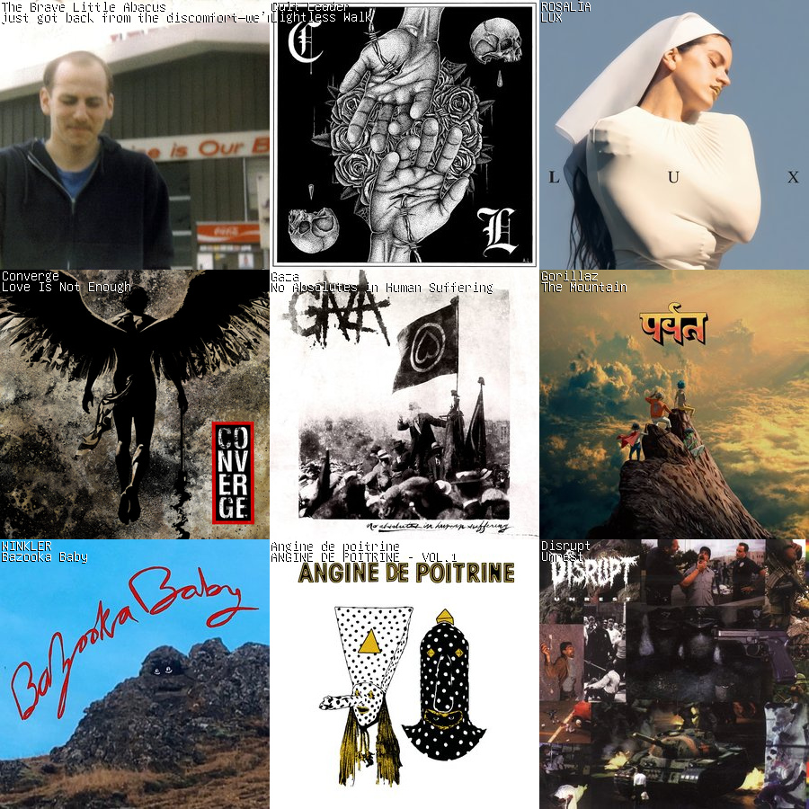
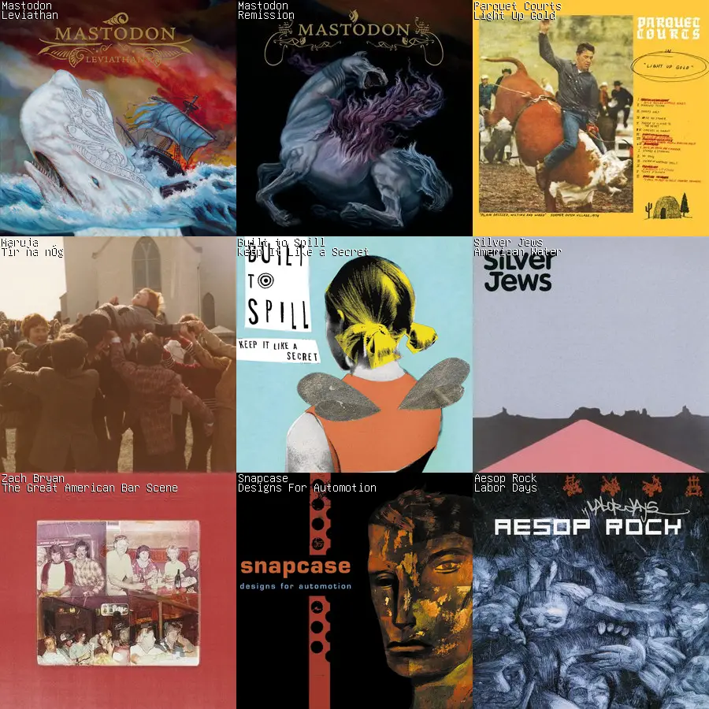
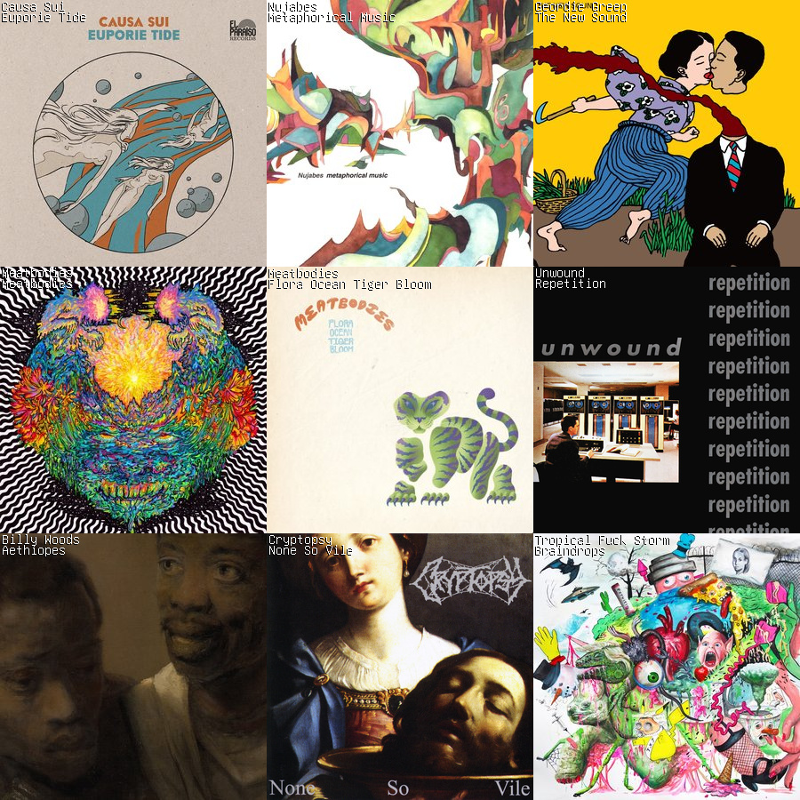
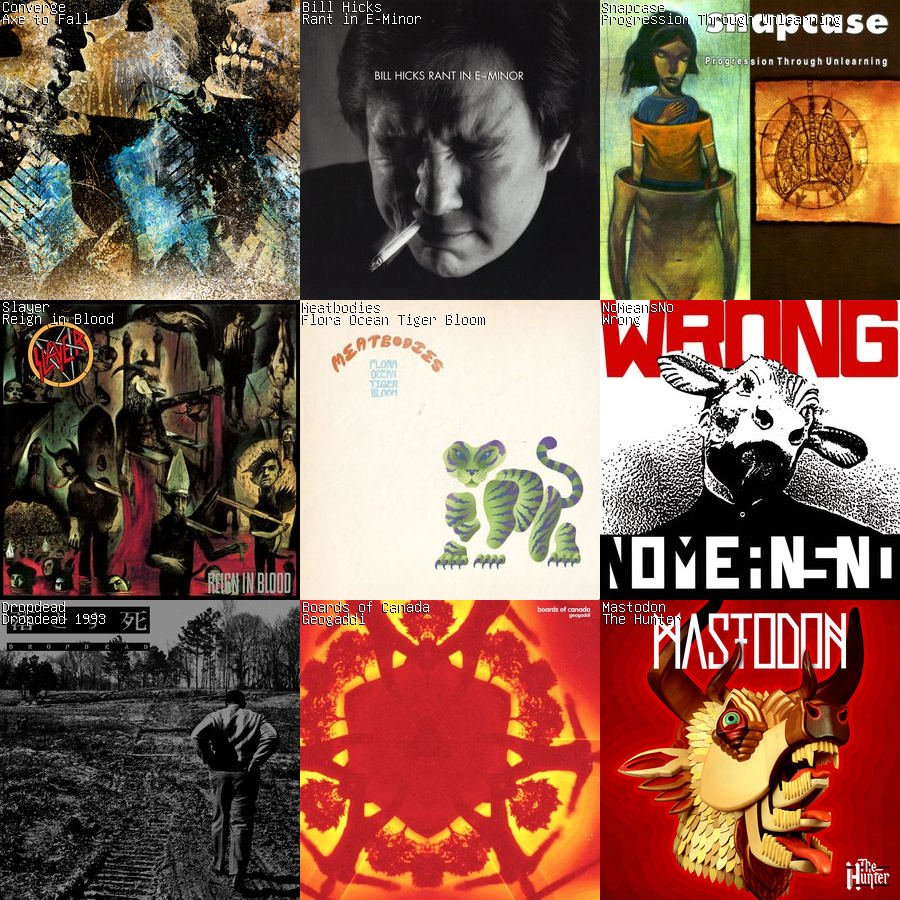
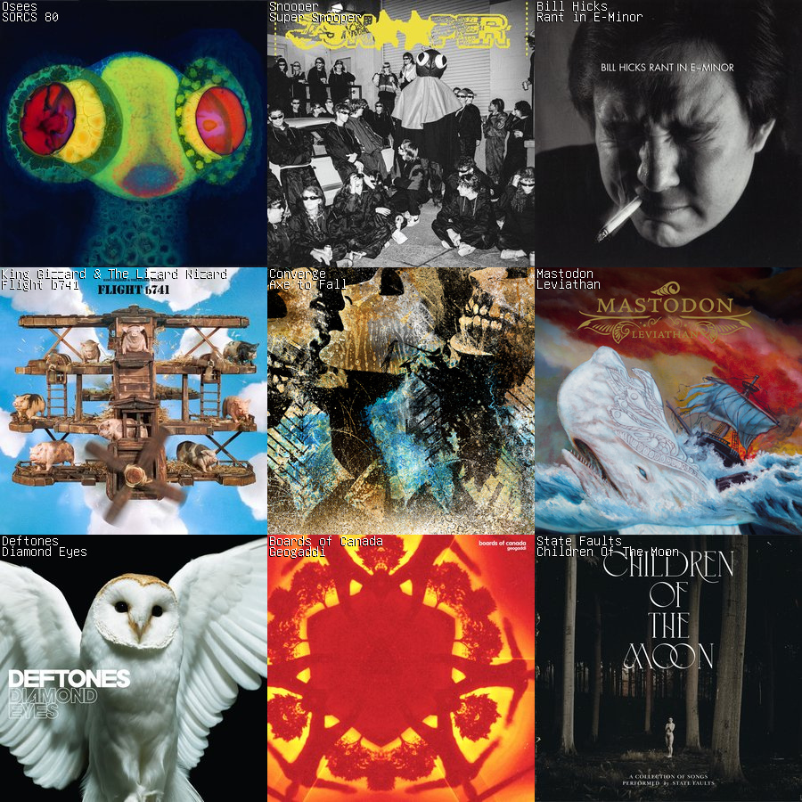
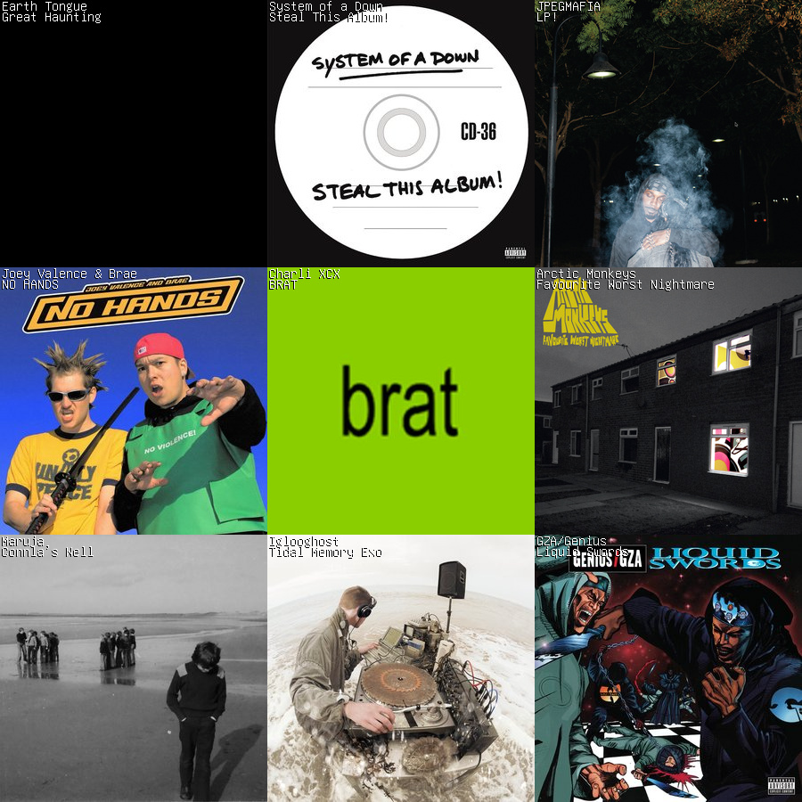
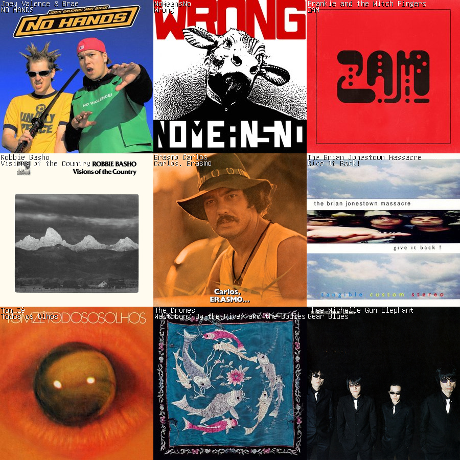
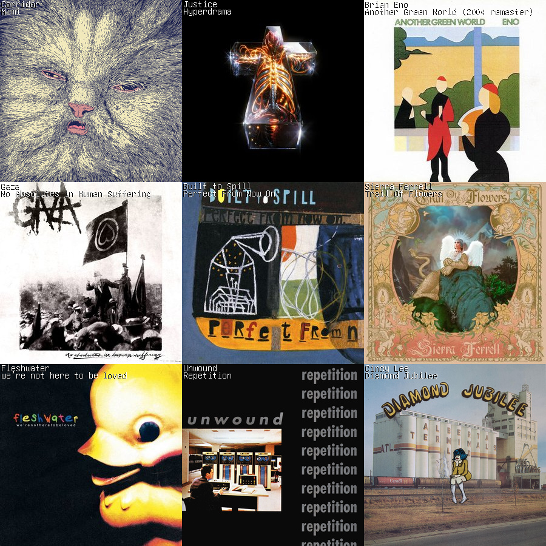
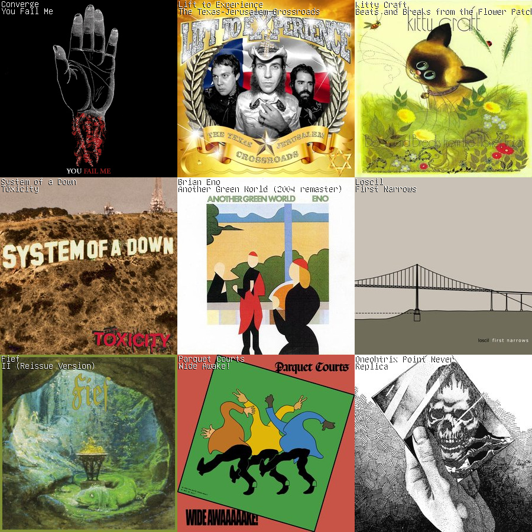

Concerts
- 04-12-26 Sun | Gloomlurker / Satan Weed / Impetigore / And More | Massasoit Elks Lodge 129 | 6:30pm | $15
- 04-16-26 Thu | Crab Lord / No More Youth / Lacquerhead / Gozerian | O’Brien’s | 8:00pm | $12
- 04-28-26 Tue | Emily How | O’Brien’s | 8:00pm | $15
- 05-09-26 Sat | SCROD / Circuit Jumper / Orbiter | 5 Rose St Somerville (PorchFest!) | 4:00pm | FREE
- 05-09-26 Sat | Rong / Wedding Gift / 7-11 Jesus / Dinos | The Fifth Column Boston | 8:00pm | $10
- 05-12-26 Tue | Earth Tongue / Pink Fuzz / Clamb | O’Brien’s | 8:00pm | $20
- 05-30-26 Sat | Homemade Speed / Yankee Bastard / Wanted / Zipper | O’Brien’s | 8:00pm | $25
- PAST 03-29-26 Sun | Taqbir / Rejekts / Zipper / Fruitcake | American Legion Marsh Post 442 | 8:00pm | $20
Music
I play drums in a two-piece punk duo called SCROD. Check out our music:
Various videos of me playing music:
- My Drum Vlog
- SÇRÖD - Full Set (Live at Somerville PorchFest)
- Teddy Picker (Drum Cover)
- You Don’t Know Me // Farinha Do Desprezo (Full Band Cover)
Listen Log
Check out what I’ve been listening to recently. Create your own charts with my command line utility, scrob_chart.

03-2026 // Album ChartBack on the hardcore/emo grind recently, and dabbling in some recent pop releases. Really digging the new Gorillaz album. Recently discovered that the members of Gaza are in a follow-up group called Cult Leader that absolutely rips. And, like every other rock nerd, Angine de Poitrine.

03-2025 // Album ChartWhoops, I missed a few months. I’ve been listening to a lot of Mastodon and indie rock recently, I guess. The drumming on Leviathan is some of the best I’ve ever heard. The older Parquet Courts album is more fun than the newer one that people like, IMO. The Built to Spill dude is an incredible guitarist. The Silver Jews have some of the best lyrics I’ve ever heard. Maruja is my favorite up-and-coming band at the moment. Saw them live this weekend and they put on an absolutely incredible performance. /rant

10-2024 // Album Chart
09-2024 // Album Chart
08-2024 // Album Chart
07-2024 // Album ChartMy top album of this month is Earth Tongue’s Great Haunting, which appears not to have made its way into the metadata infrastructure yet. I strongly recommend checking out the release and supporting them on Bandcamp.

06-2024 // Album Chart
05-2024 // Album Chart
04-2024 // Album Chart